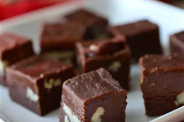

Milk Chocolate

Aunt Teen's Creamy Chocolate Fudge
"I have made this fudge several times over the years and have followed the recipe to a tee every time and have gotten perfect results," raves jtrzcinski. "This fudge is so creamy and delicious, it is requested by family and friends every year."
Ingredients
- 1 ½ cups white sugar
- 1 (7 ounce) jar marshmallow creme
- ⅔ cup evaporated milk
- ¼ cup butter
- ¼ teaspoon salt
- 2 cups milk chocolate chips
- 1 cup semisweet chocolate chips
- ½ cup chopped nuts
- 1 teaspoon vanilla extract
Back to Home